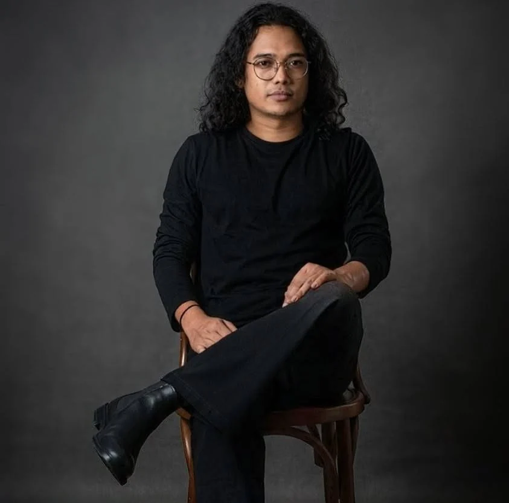

STAFF REPORTER · THE DAILY STAR
Arafat
Rahaman
Journalist covering education, governance, human rights, social welfare and the institutions that shape public life in Bangladesh.

LATEST WORK
Recent reporting & analysis
NOTABLE
Selected work
ABOUT
Reporting with context.
Arafat Rahaman is a Staff Reporter at The Daily Star. His reporting spans public policy, education, governance, rights and social issues, alongside photography.
Professional profile →PHOTOGRAPHY
Through the lens.
Documentary and field photography alongside reporting.
CONTACT & PROFILES
Connect professionally.
For reporting enquiries, professional contact or public profiles.
HAVE INFORMATION?
Something worth reporting?
Documents, data, a lead or first-hand information can be the beginning of a story.